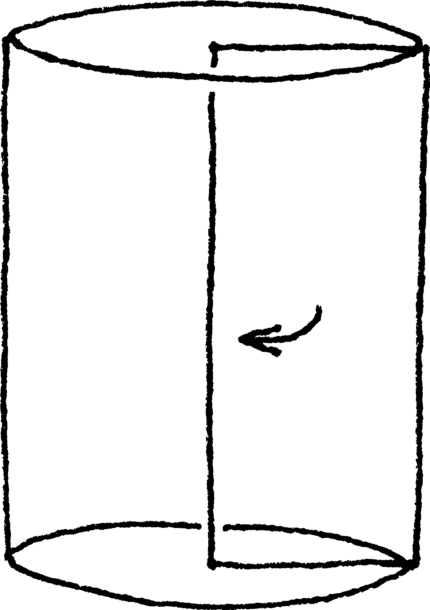
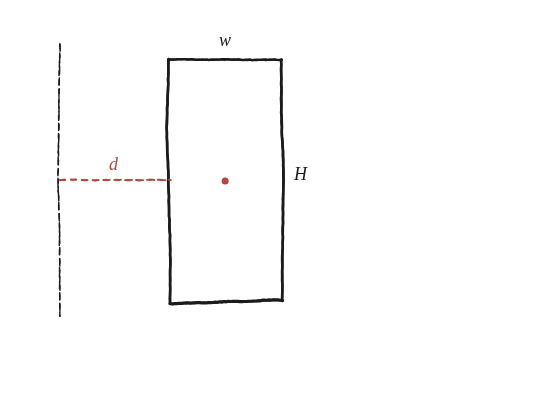

Demostra que el teorema de Pappus funciona per a un cilindre format en fer girar un rectangle.

Què hem de produir
Una comprovació, no una definició nova: que la fórmula de Pappus (àrea × 2π × distància del centroide) i la fórmula habitual del volum d'un cilindre donen exactament el mateix nombre.
Situa el rectangle respecte de l'eix
Un cas important: aquest rectangle no toca l'eix. Rectangle d'amplada w (perpendicular a l'eix) i alçada H (paral·lela a l'eix), amb el costat més proper a l'eix a distància d. El seu centroide —pel concepte ja definit d'un centroide— és al seu propi centre geomètric.
La construcció

Tancar-ho
Com que el rectangle no toca l'eix, girar-lo no produeix un cilindre senzill: produeix un cilindre amb un forat cilíndric al mig —un tub. El seu volum, per resta de dos cilindres, és π(d+w)²H − πd²H, amb radis d+w (la vora exterior) i d (la vora interior), mateixa alçada H. Desenvolupant:
πH[(d+w)² − d²] = πH[d² + 2dw + w² − d²] = πHw(2d + w)
I ara amb Pappus: àrea del rectangle (w×H), per 2π, per la distància del centroide a l'eix (d + w/2):
wH · 2π · (d + w/2) = 2πwH·d + πwH·w = πHw(2d + w)
Les dues expressions són idèntiques, i no només per als números de la comprovació: per a qualsevol w, H i d. Que el w/2 del centroide es converteixi en el w²/2 · 2π = πw² que fa falta és exactament el que fa que la cosa funcioni —si s'hagués pres el costat exterior (distància d+w) en lloc del centre, sortiria πHw(2d+2w), que és massa.
Les dues vies donen πHw(2d+w): Pappus coincideix amb la resta directa de dos cilindres per a qualsevol w, H i d —incloent-hi el cas d=0, on el "forat" desapareix i el sòlid es converteix en un cilindre senzill, el cas ja conegut.
Comprovació
w=1, H=3, d=2 (centre a distància 2,5 de l'eix): Pappus = 1×3 × 2π × 2,5 = 15π. Per resta de cilindres: π(3²)(3) − π(2²)(3) = 27π − 12π = 15π. Coincideixen.